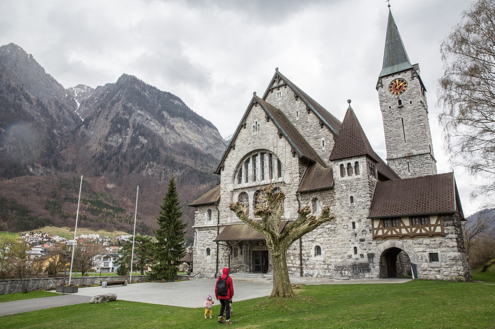
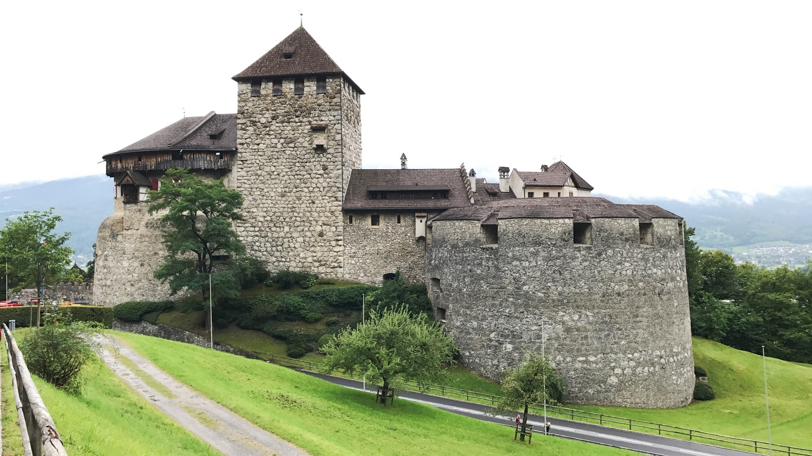
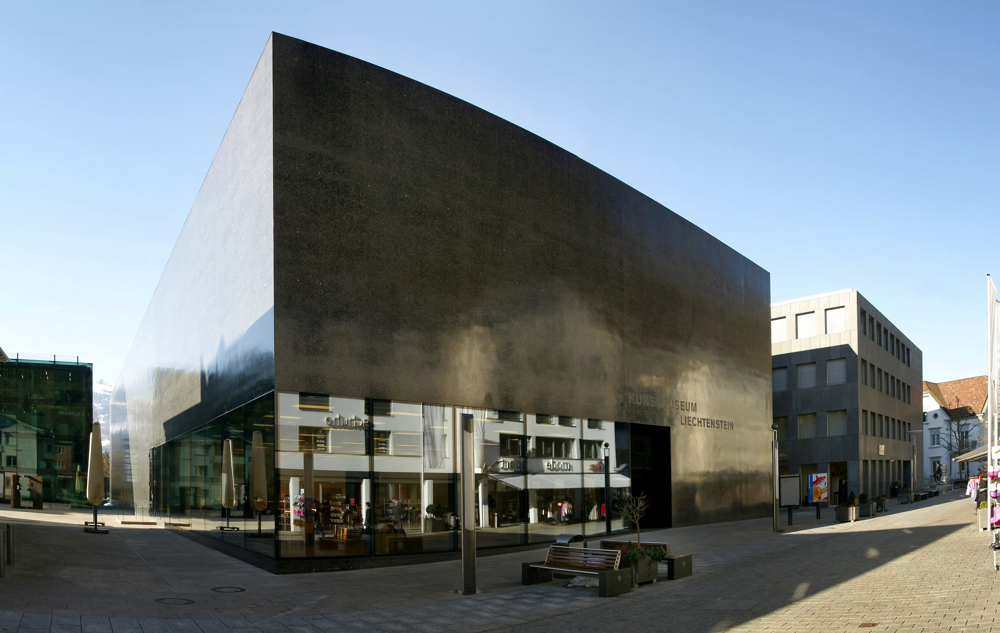

Places to See in Liechtenstein
1) Burg Gutenberg, Balzers (Gutenberg Castle)

The Gutenberg Castle resides on a hill 70 meters above the nearby village. The castle interior is closed to the public but you can still see the chapel and rose garden there. On top of beautiful scenery, which consists of over 5 visable waterfalls, and gardens it also has major historical significance as archiologists unearthed a Mars von Gutenberg figurine that was about 12cm in height along with other historical relics.
2) Vaduz Castle, Vaduz

Vaduz Castle is 120 meters above the nearby town. Suprisingly enough Vaduz Castle is still in use as it is the home of the Prince of Liechtenstein but you can still visit, with guided tours. On the outside a beautiful garden refered to as the Princess Gardens. Here you can learn about the part Napoleon played in Liechtenstein's history.
3) Kunstmuseum Liechtenstein, Vaduz (Art Museum)

This art Museum may not look like anything spectacular from the exterior, a black polished building refecting the surounding Rhine Valley, however inside there are many sculptures. Some displaying messages and characters from the mythologies of Joseph Beuys. With 6 exhibits it may be small but it holds massive riches form the culture of Liechtenstein.